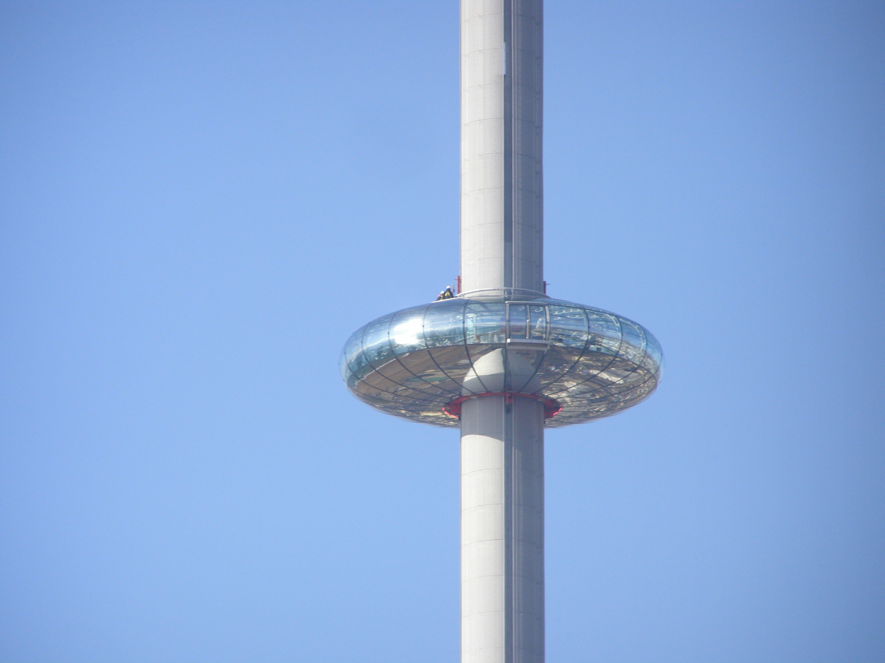

1. Go on the I360

The I360 is a giant pole with a glass doughnut around it that acts as a lift. You can book a “flight” to go into the the glass doughnut, travel to the top of the pole, and get a full view of the entirety of Brighton!